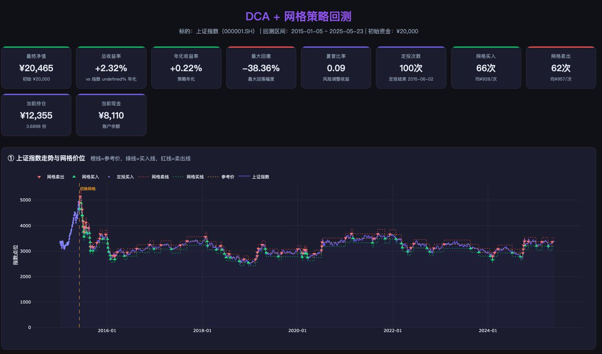
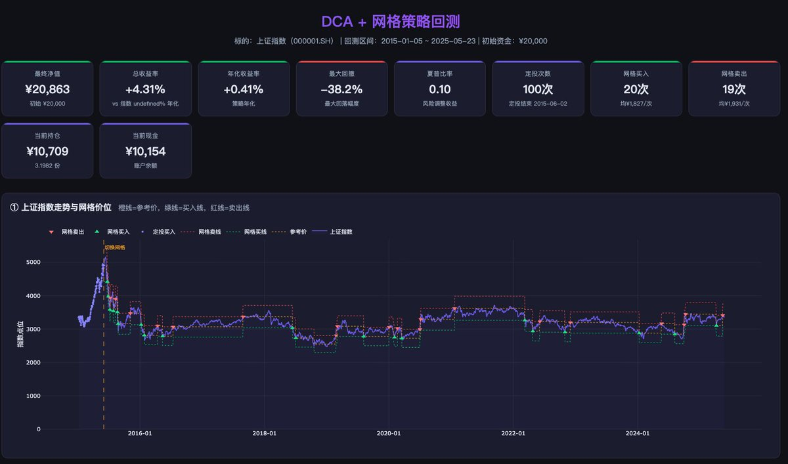

寒涟漪
@HANLIANYI331
@goblinjun 在dca到a股15年泡沫最高点以后还能保持总收益是正的，这个数据真可以了。把dca时间后移两年或者换美股港股之类的会很显著


Gobling
@goblinjun
@HANLIANYI331 网格策略，我很好奇最终结果，拿最近 10 年的上证指数跑了一下回测。10% 的买卖网格交易次数有点少，又测试了下 5% 的买卖网格。
最终结果你自己看吧。比较惨，收益不如国债。回撤数据也不算好。 https://t.co/aXlN8Zpbto